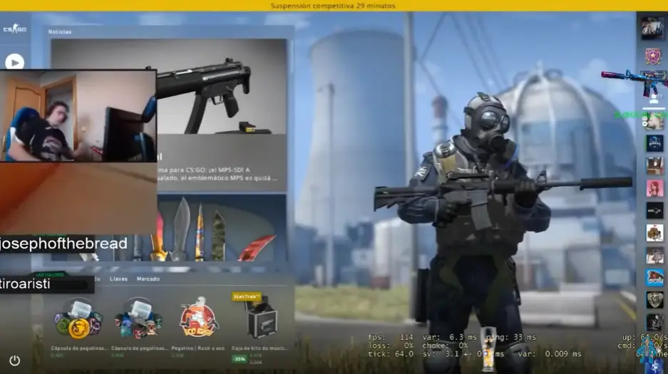

Tense li pregunta a un company del seu amic verd que cual es el seu problemaA consecuencia Tense s'enfada i comença a dispararli al cap al seu companyA causa d'aixo ho expulsan de la partida i te un temps de "baneo" de 30minuts on no podra jugar partides competitivesTense, molt molestat, li comença a donarli cops de puny molt forts a la taula, destrosan el teclat y posiblement la pantalla